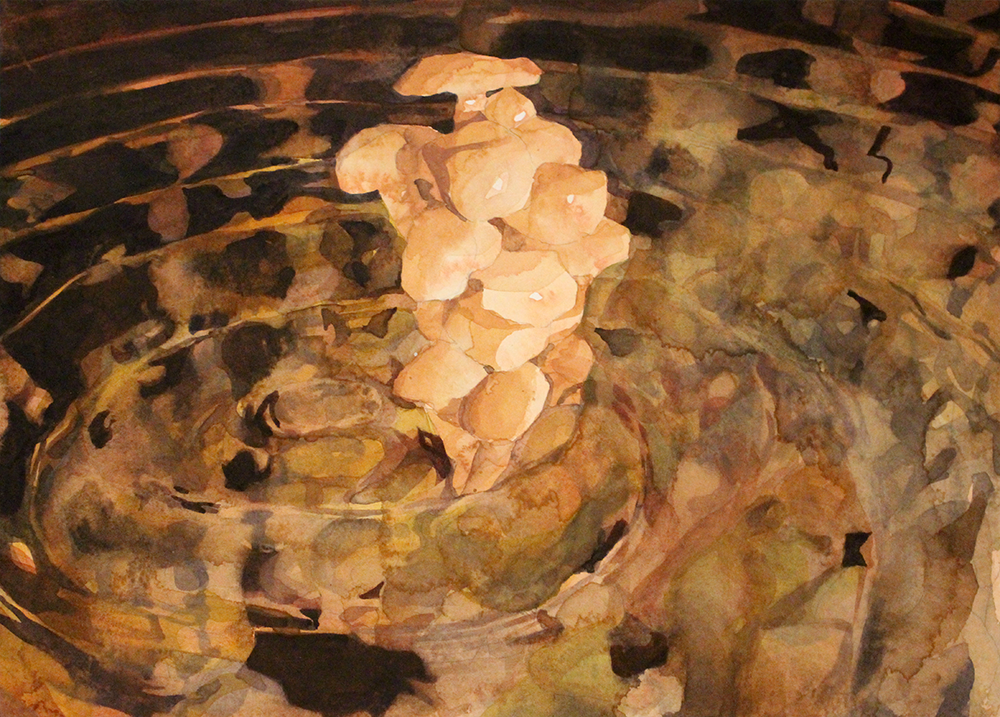
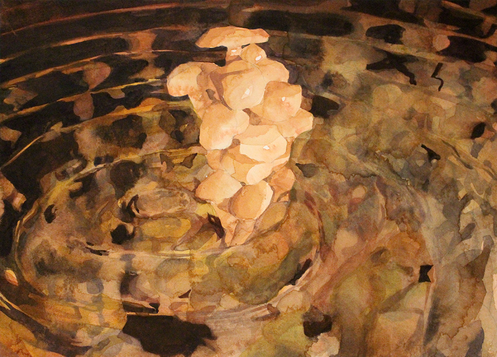
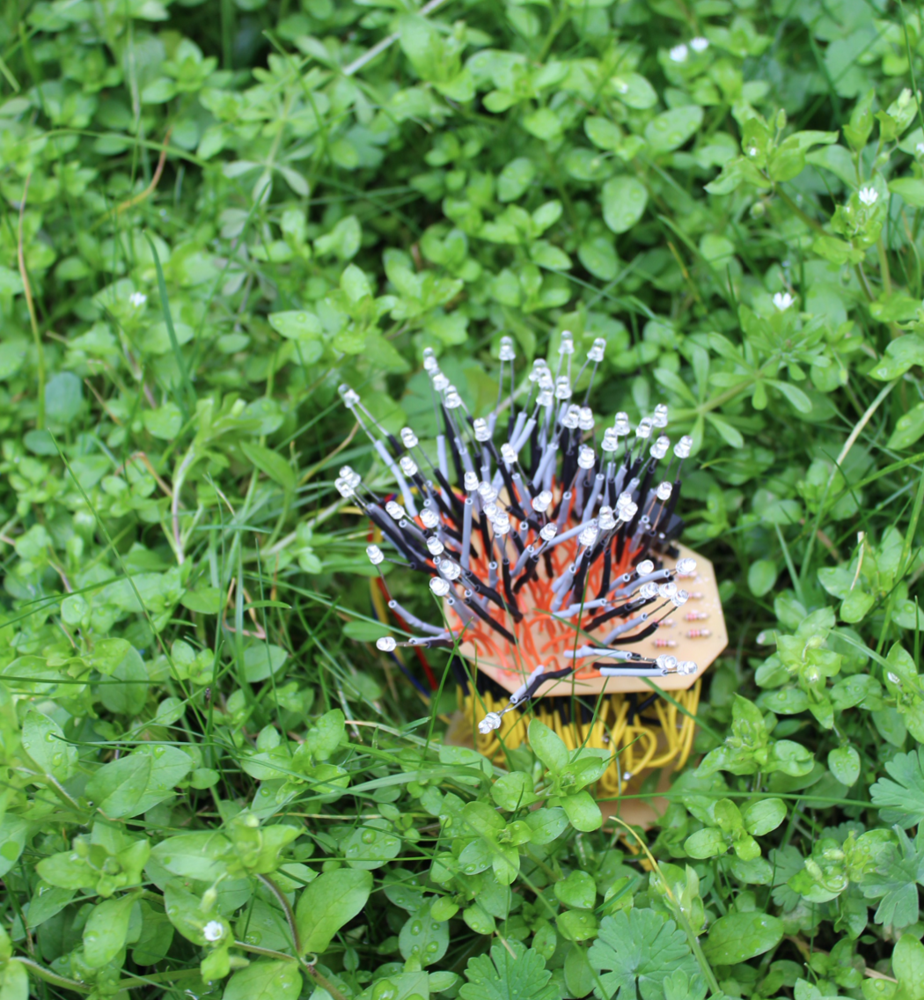

artist statement
A phone is an agent through which a specifically modern relationship exists- a site of work, contacting friends, arguing with strangers and looking at porn.
The light from that phone has a narrow gamut of colours, less than those visible to the human eye. The interface of a screen promises a complete experience- Could the highest definition VR be a seamless replacement for an interconnected life? However, there's no denying that the real world just 'feels' different.
Megan Bates is a computational artist who works largely with the media of code and paint. She produces works about our increasingly complex relationship with machines.
Her physics background informs her practice, and she is particularly interested in interconnectedness, both quantifiable and spiritual. Informed by Karen Barad's 'meeting the universe halfway', she explores the relationship between Quantum entanglement and individuality, and queer theory questioning boundaries between the human and non-human.
She understands herself as part of a co-regulated soup of stressed-out humans, copper wires, fungal roots, twitter threads and carbon emissions. Megan hopes to capture some essence of that soup with empathy extended in unusual directions.
She takes inspiration from Dutch flower paintings such as those by Jan Davidsz de Heem, which she feels succeed at representing this concept by appearing sensuous from a distance, but challenging and disorienting on closer inspection. The entangled phenomena of disgust and eroticism are depicted through this experience of encountering the alien.
Digital rendering allows Megan to create photorealistic lighting within impossible environments, and enable her to construct dreamlike worlds intertwining unusual materials to construct liquid pools, misty fogs, and fleshy appendages. These are then pulled out of the screen, through Megan's process of interpreting and capturing these computational dreams in a spectrum of paint too broad for digitisation.
render paintings
An ongoing series of works in which digital renders are interpreted into oil paints, watercolours or, ocassionally, pencils. Sometimes Megan's home-made drawing machine is involved.

The 3D rendering environment allows for an interesting approach to image making- fantastical dream-like scenes can be depicted with photorealistic lighting despite their physical impossibility.
 

The result is intended to be a strange in-between place of realism vs abstraction, a plein air painting in an imaginary video game.
click here
to go through to the full gallery of these works.
Many of these pieces are for sale, contact Megan on meganlaurabates@gmail.com for up-to-date information.
Many of these pieces are for sale, contact Megan on meganlaurabates@gmail.com for up-to-date information.
no such thing
A collaborative work between Megan and Daniel Cesarani
@chezzarani.
Writing by Daniel, images by Megan.
A work about memory, and the isolating experience of existing persistently in a digital space. It was created during covid lockdown 1, 2020. Read it
here.
The images are a collection of collages of assets from video games, photographs of reality, and oil paintings by Megan. The possibility to distinguish between the sources of these collage elements is kept deliberately challenging.
paint studies
Still lifes, practice paintings and colour studies.
click here
to go through to the full gallery of these works.

Many of these pieces are for sale,
contact
Megan on meganlaurabates@gmail.com for up-to-date information.

computational garden
A single piece which is a predecessor to Megan's 'render paintings'. This is a machine-automated embroidery of a digitally rendered monochrome scene of flowers.

The greyscale tones are calculated through raytracing a virtual light's beams of light bouncing through a scene of flower models. The flowers are a kind of 3D 'collage' of collected opensource models, some made by other artists, some constructed with photogrammetry of real flowers.
click here
for a full-screen image of the work.
balloon
An interactive experiment which can be 'played'
here.
Inspired by video games such as QWOP, this work encourages the user to use an unconventional finger position on the keyboard to create an unusual interactive experience.
A pinching/pulling finger position is used to control an inflating balloon. Holding all of the WAXD keys causes the balloon to inflate and rise, and removing a key lets the balloon spring back in the correlating direction, and get a little boost moving that way.
This work is in development- this image depicts the custom controller made of entirely soft materials (mostly conductive thread) which exaggerates the 'stretching' experience of the finger positions.
digital symbiote
Digital Symbiote was the final piece for Megan's Computational arts MA. The system is programmed microchip and circuitboard of her own design, which is set up to have a symbiotic relationship with a plant.
click here
to view the video documentation of this piece as it was exhibited at the Goldsmith Computational Arts degree show 2018.

The plant and digital symbiote share a biodegradable home. When the plant triggers a signal in a photoelectric sensor, the microchip in the digital symbiote is programmed to respond by stimulating the game of life on its LED array. The colours of the LEDs are chosen to be a good spectrum for photosynthesis, and within the dark space help to sustain the plant that the digital symbiont lives with.
If either dies, so does the other, and so the piece is a reflection on what we consider alive, what we consider complex, and what collaborative relationships are possible.
gaze
An opensource eye-tracking software project using machine learning to detect eyes, and computer vision to correlate pupil position. After calibration, the software presents an interactive experience whereby wherever the audience looks the contents of the screen are removed.
click here
to view the video documentation of this piece.

Into the peripheral vision, the color of the screen is tinted. As human eyes see peripheral colour differently, the work explores a unique colour experience as well as playing with disorientation.
The project was based on deprecated C++ code for openframeworks, and updated with a pull request made on github. You can read the code
here.
The project was originally built as a computer interface for users wih mobility accessibility needs, to control a PC, for making art using only eye movement.
medusan and athenian interactions
An essay-come-artwork meditating on digital vs natural aesthetics. This dichotomy was explored using the myth of Medusa and Athena. This work was a predecessor to digital symbiote.
Click here
to read it.

knots
A piece exploring creating different visuals with a shared 'knotting' pathing program, winding digital ropes over one another.
The programs were projection-mapped onto a 3d shape to create the illusion that the surfaces of the shape were screens.
click here
to view the video documentation of this piece.
flown
A mobile game which uses gyroscopics to control the motion of a bird within a generative landscape.
click here
to view the video documentation of this piece.

This work was a collaborative piece between myself,
Rebecca Aston,
Tin Geber,
Joseph Rodrigues Marsh,
and
Isaac Clarke.
tarot
An interactive twine story based on the tarot deck. It can be read
here.

planets
A close study of the surfaces of the planets in our solar system. See them all
here.

clouds

staying in touch